Home / Art Gallery / Portraits of Rubens and of His Family on Stamps
Portraits of Rubens and of His Family on Stamps
From the original Art on Stamps archive
Peter Paul Rubens (1577–1640), the great Flemish Baroque painter, was also a remarkably sensitive portraitist. His portraits of family members and children reveal an intimacy different from the grandeur of his monumental paintings. Postage stamps preserve these tender images in miniature.
Rubens and his circle — Belgian stamps of 1939
We begin with four Belgian stamps from the 1939 Rubens-related issue (Scott B241–B248). Presented as individual stamps, their lower edges are aligned like specimens in a stamp album. The purple 2.50-franc stamp was supplied twice; it appears here only once.
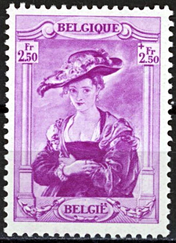
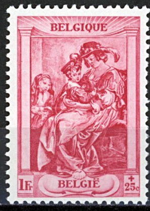
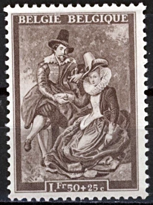
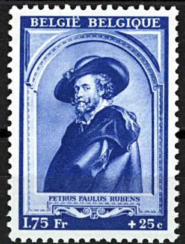
Clara Serena Rubens — a daughter's portrait
Clara Serena, Rubens's daughter, died in 1623 at the age of twelve. Images associated with her have long fascinated collectors. Some portraits were historically identified as Clara Serena or as a lady-in-waiting to the Infanta Isabella; those identifications should be understood in their art-historical context.
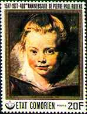
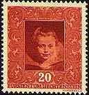
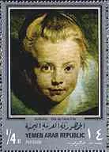
The contrast between the lively faces and the painter's restrained treatment of childhood makes these stamps especially compelling as miniature reproductions of paintings.
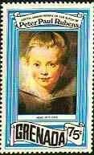
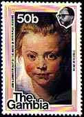
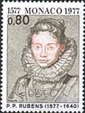
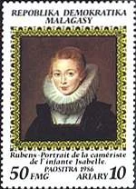
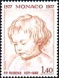
First-day covers and a maximum card
Postal covers and maximum cards are presented separately from individual stamps, preserving their complete layouts, postmarks and accompanying illustrations. The Liechtenstein card reproduces a painting held in the princely art collection.
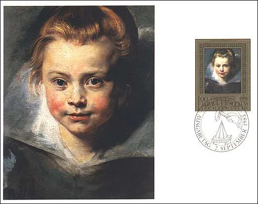
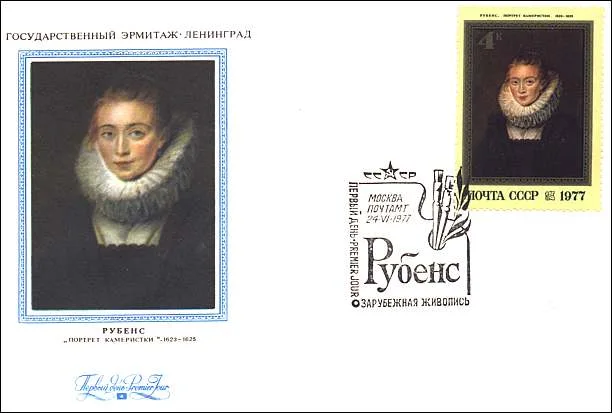
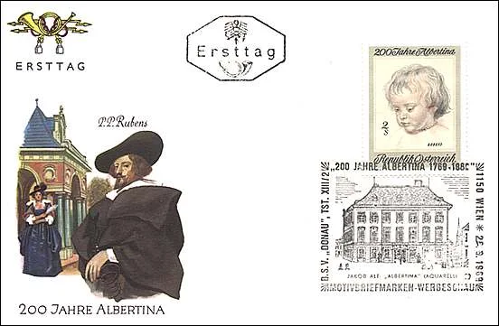
The Austrian issue commemorated the bicentenary of the Albertina collection in Vienna. Its first-day-cover design is associated with Prof. Ernst Schrom, a noted Austrian stamp designer who died in 1969.
A special cover from the 2003 NIPA international stamp and coin fair in Antwerp commemorates Rubens through a printed portrait and exhibition postmark. Alongside it is a Bulgarian portrait stamp from 1977, displayed separately on the right.
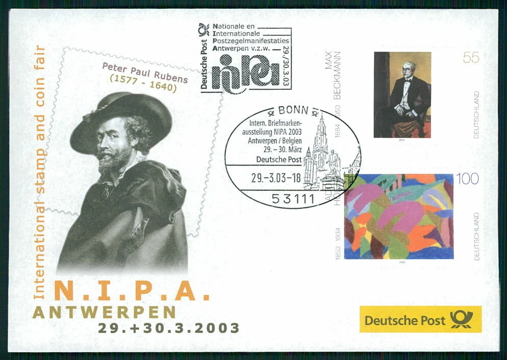
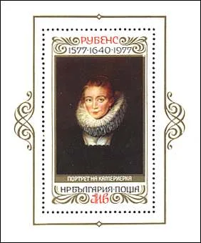
International Rubens Year — Belgium, 1977
The International Rubens Year marked the 400th anniversary of the painter's birth (1577–1977). This Belgian miniature sheet combines three portraits with decorative inscriptions in French and Dutch. It is shown complete, apart from the individual stamps above.
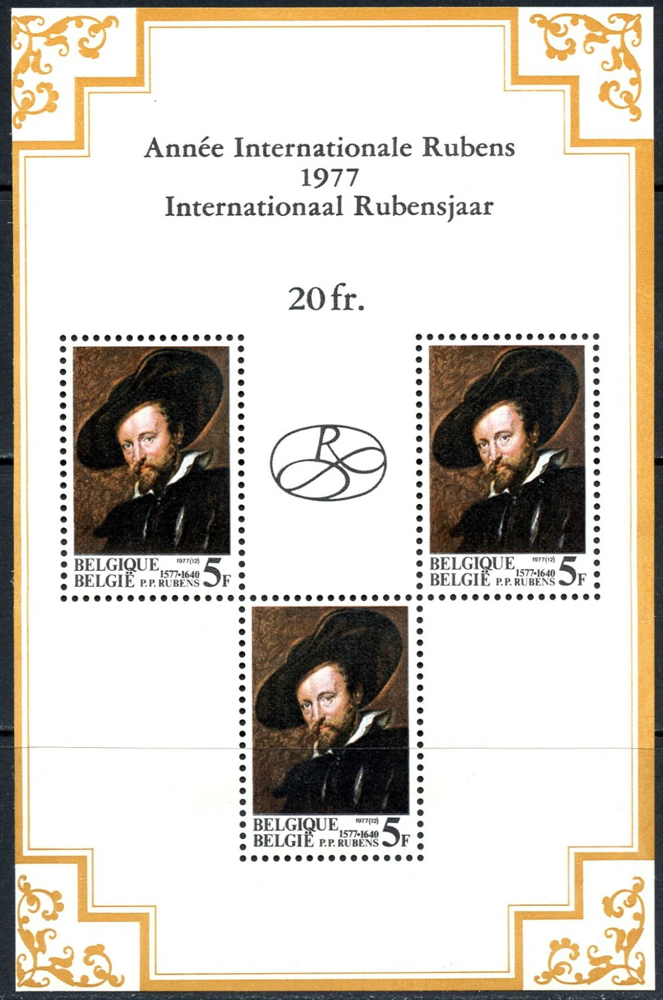